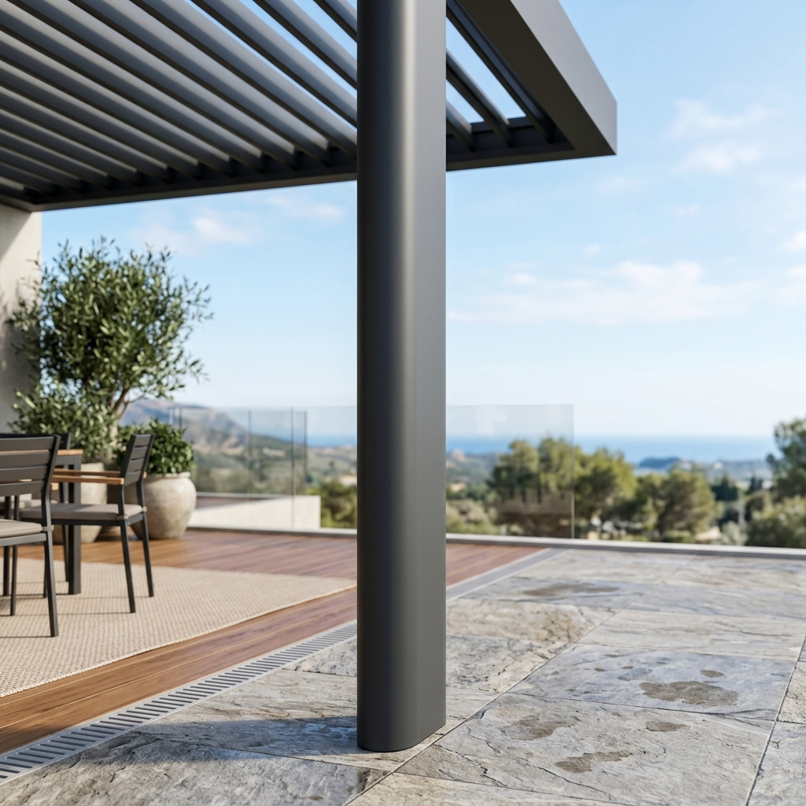
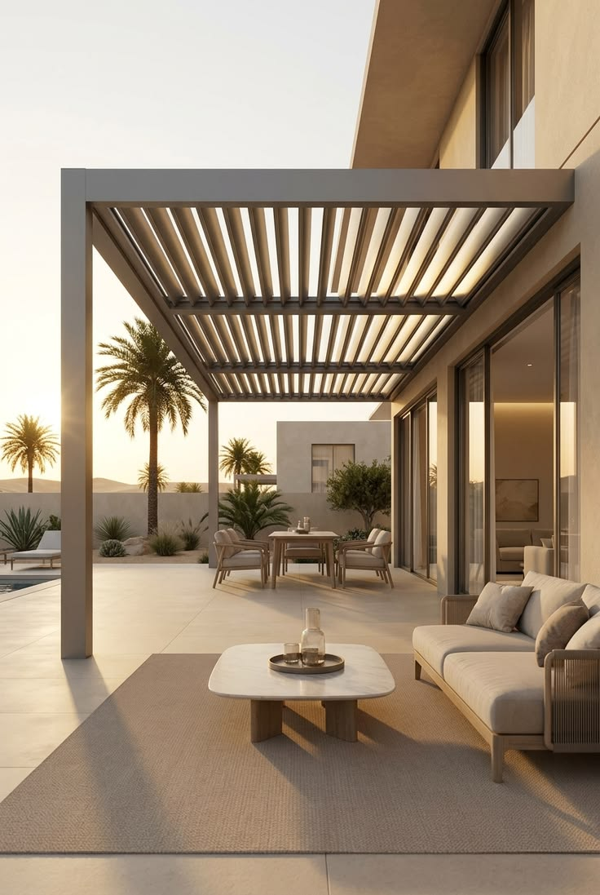
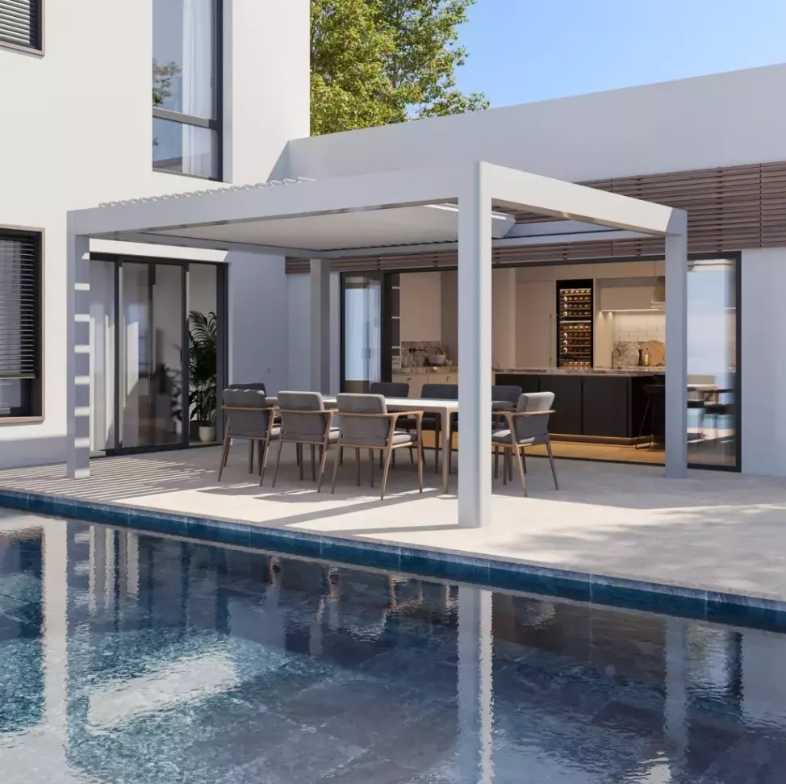

Motorlu alüminyum lameller ile dört mevsim açık hava konforu.
FİYAT TEKLİFİ ALPergola, bioklimatik pergola ya da bioklimatik pergola fiyatları... Pergola ile ilgili aranan her şeyi yeniledik. Dünya’nın 86 ülkesinde 500’ün üzerinde üretici bayisi ile sektör lideri Albert Genau, yeni nesil bioklimatik pergola sistemini tasarladı. Tüm detaylarıyla, %100 Albert Genau…
Albert Genau Bioklimatik Pergola, geleneksel pergola sistemlerinden farklı olarak dikmelerin görünümünü estetik ve fonksiyonel olarak çeşitlendirir. Oval dikme kapağı ve düz dikme kapağı gibi seçeneklerle farklı zevklere hitap ederken, her iki seçenekte de kesintisiz bir dikme görünümü sunar.
Bioklimatik pergolanın panelleri, makas sistemi ile birbirine bağlanarak senkronize bir şekilde açılıp kapanma hareketi gerçekleştirir ve her türlü ortamda güvenilir performans sunar. Bu makaslar, hareket sırasında panellerin konumunu ve hızını kontrol altında tutarak sistemin bütünlüğünü her an korur.
Pergolanın olukları çift katmanlı yapısı ile ekstra dayanıklıdır. Bu çift hücreli yapı anti sehim geometri özelliği taşır. Kenet mekanizması ile montajı ekstra kolay olan oluk, monoblok oluşuyla her türlü Albert Genau cam balkon, sürme ve giyotin sistem entegrasyonunda, su yalıtımını ve drenajını engellemeyecek şekilde tasarlanmıştır.
Albert Genau Bioklimatik Pergola, özenle tasarlanmış ray ve panel mekanizmalarıyla donatılmıştır. Adaptif hareket özelliği, kurulum sırasında veya kullanım esnasında oluşabilecek hataları etkin bir şekilde sönümleyerek panellerin hareketini kontrol altında tutar ve güvenli bir şekilde sistem hareketi devam eder.
Pergola, gölgelendirme amaçlı yapılmış çatı sistemlerinin genel adıdır. Bioklimatik pergola, alüminyum lamellerden oluşan çatı sistemine sahip, motor ve uzaktan kumanda ile bu çatı sisteminin lamellerinin hareket ettirildiği gölgelendirme yapısıdır. Eski nesil bioklimatik pergolaların sadece lamelleri olduğu yerde hareket eder ya da motorun yanı sıra ikinci bir aktüatör yardımı ile lameller hareket ettirilir, lamel hareketleri çelik teller ile sağlanır.

Albert Genau Biokimatik Pergola Sistemi, tek motor ve uzaktan kumanda ile hareket eder. Pergola sisteminin lamellerin senkronize hareketi, özel tasarım makas sistemi ile sağlanır. Kendi kendine ayakta durabilen Albert Genau Bioklimatik Pergola Sistemi, her türlü iklim koşullarında sorunsuz ve konforlu kullanım için tasarlanmıştır. Bahçenizde ve terasınızda, bioklimatik pergola sistemleri kurabilir, sistemlerin etrafını yine Albert Genau hareketli cambalkon sitemleri ile kapatarak, keyifli mekanlar oluşturabilirsiniz. Bioklimatik pergola sitemlerinin tavanını, istediğiniz kadar açıp, istediğiniz kadar kapatabilirsiniz.

Albert Genau Bioklimatik pergola sistemlerinin etrafını, isterseniz sürme cambalkon sistemleri ile isterseniz otomatik giyotin cam sistemleri veya cambalkon sistemleri ile kapatabilirsiniz. Pergola sistemi, bu sistemler ile %100 entegre tasarlandığı için, montaj sırasında herhangi bir sıkıntı yaşanmaz. Tüm sistemler %100 Albert Genau garantisinde olur.

Bioklimatik Pergola, su drenaj sisteminde özel olarak tasarlanmış yaprak tutucusuyla donatılmıştır. Bu yaprak tutuculu drenaj sistemi, oluğun içine entegre edilerek su giderini tıkayabilecek materyallere karşı koruma sağlar. Aynı zamanda, kolay takılabilir ve çıkarılabilir yapısıyla bakımı son derece pratiktir. Pergolanın su drenaj sistemi, kullanıcıya hem güvenlik hem de kolaylık sağlayarak, uzun ömürlü ve düşük bakım gereksinimli bir çözüm sunar.
Sürekli Ağır Yağmur Durumu (108 l.m2/h) testlerini başarıyla geçmiştir.
Kirlenmesi zor, temizlenmesi kolay, soft-touch özellikli QualiCoat belgeli boya.
Tüm aksamlar paslanmaz özelliktedir ve korozyon dayanımına sahiptir.
Oluğun içine entegre edilmiş yaprak tutucu ile su gideri tıkanmalarına karşı tam koruma.
Çoklu modlara sahip, ayarlanabilir renk spektrumlu çift yönlü aydınlatma seçeneği.
T6 termik seviyeli güçlendirilmiş profiller ile yüksek taşıma kapasitesi ve sağlamlık.
"Terasımız artık her mevsim bizimle."
"Sensörler harika çalışıyor, yağmur başlayınca kendisi kapanıyor."
"Işıklandırması çok şık duruyor."